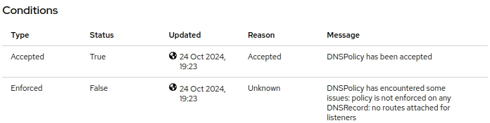

Create DNS Policy
Now that we have setup a secure, protected application connectivity environment, we are now ready to expose this to the Internet. We will do so by creating a DNSPolicy.
In this lab, you set a DNSPolicy for your Gateway, using the previously defined DNS provider secret, and verify its acceptance by the Kuadrant controller.
-
Configure the DNSPolicy for your Gateway by running the following command:
[lab-user@bastion ~]$ curl -s https://raw.githubusercontent.com/RedHatQuickCourses/rhcl-qc-apps/refs/heads/main/kuadrant-dnspolicy.yaml | envsubst | oc apply -f - dnspolicy.kuadrant.io/external-dnspolicy created
The DNSPolicy will use the DNS Provider Secret that you defined earlier.
-
Check that your DNSPolicy has been accepted as follows:
[lab-user@bastion ~]$ oc get dnspolicy ${gatewayName}-dnspolicy -n ${gatewayNS} -o=jsonpath='{.status.conditions[?(@.type=="Accepted")].message}' DNSPolicy has been accepted -
Navigate to the Red Hat Openshift console and select Operators → select Installed Opertor → select Kuadrant Operator → select DNSPolicy → select external-dnspolicy and notice the Conditions section:
Note that the Enforced status is set to False as there is no routes attached for listeners.